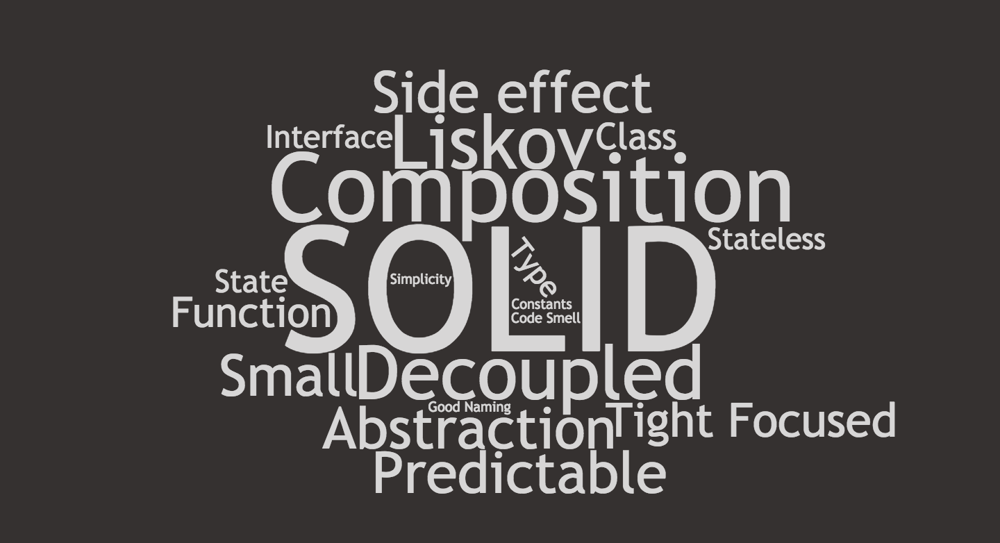
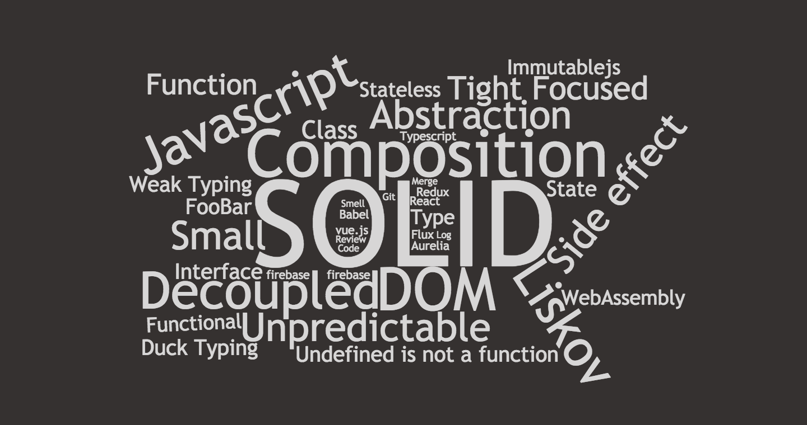
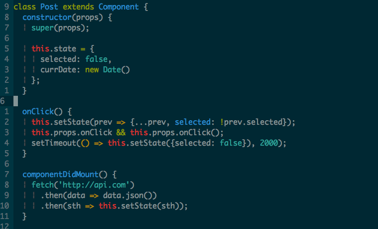
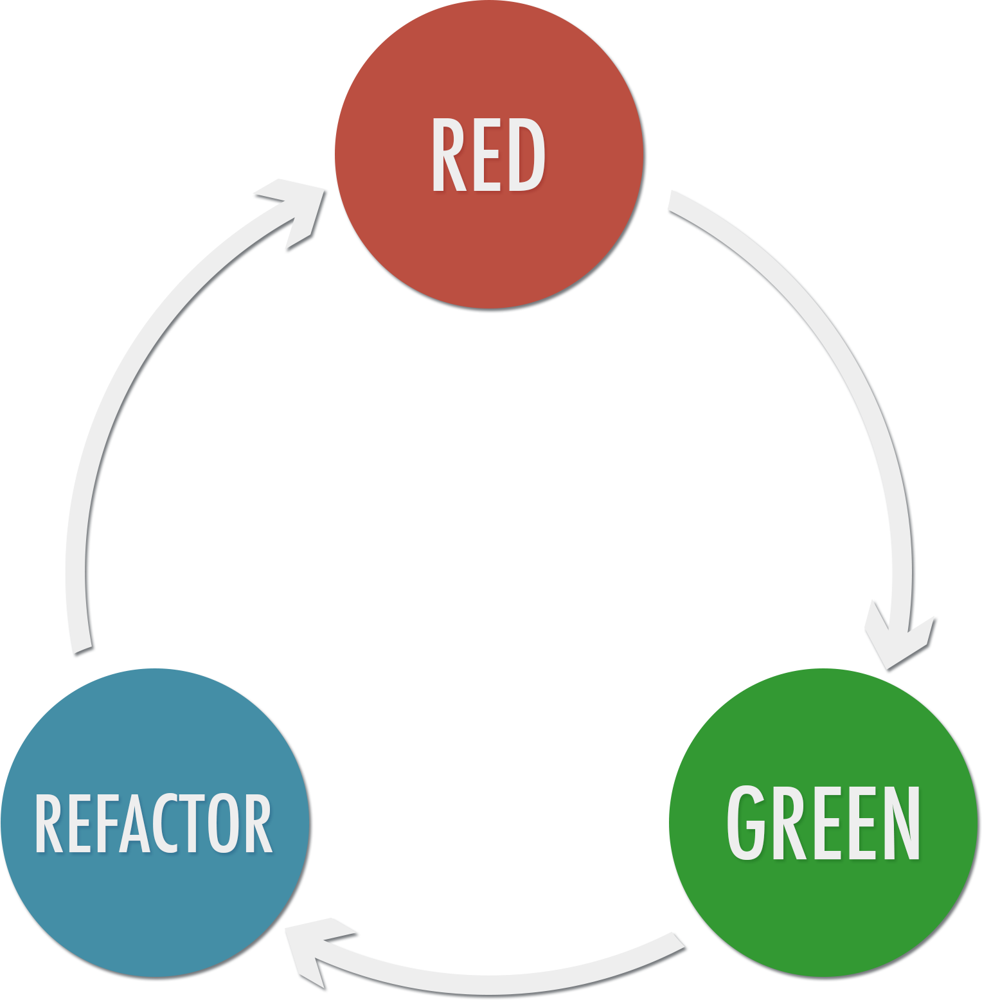
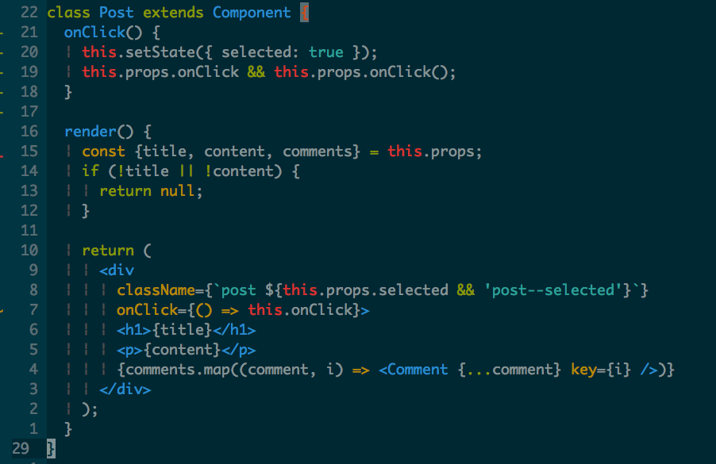
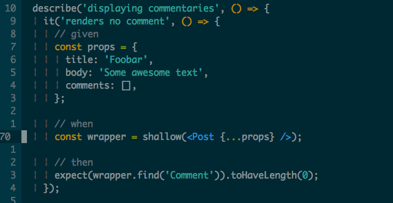
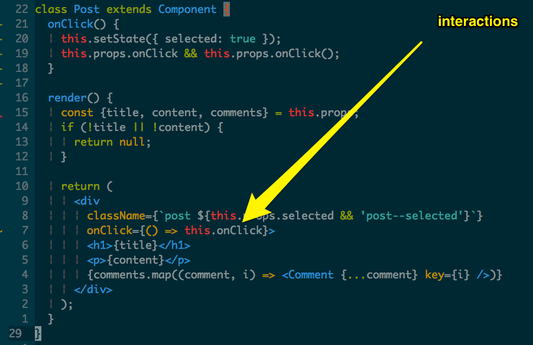
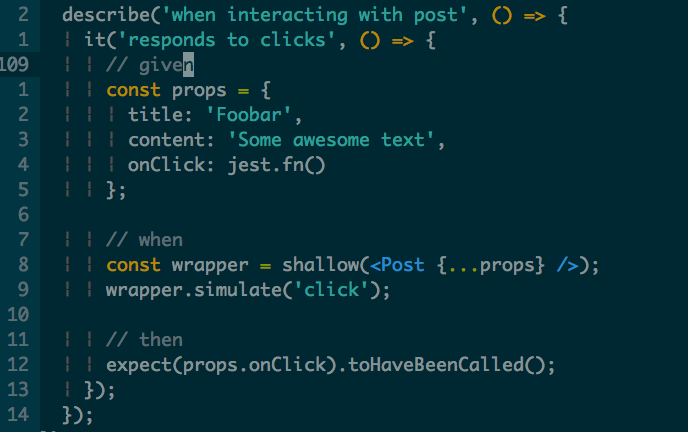
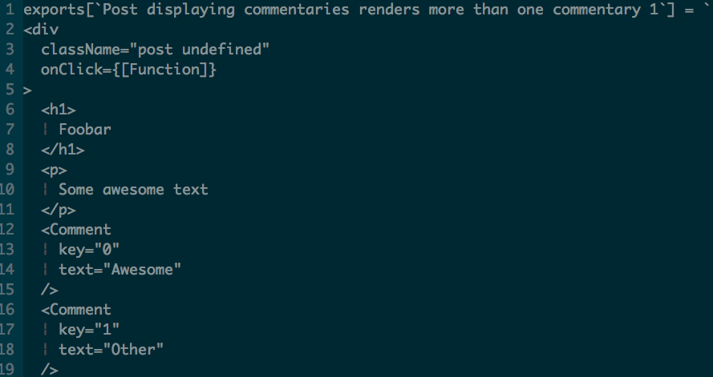

When React meets TDD ü§ù
import Sanity, { BetterCode } from 'ui-unit-tests';
By Cristian Oliveira
üáßüá∑üá©üá™
Github: @cristianoliveira
We will talk about
- Automated testing background.
- Unit testing.
- UI Testing.
- TDD and React.
- Good practices.
- Some examples.
A long time ago in a place far, far away....
Episode XX
The old culture
It was in a time where big companies were ruling the whole culture.
The product planning and deliverying were very slow and burocratic.
The QA process were strict and heavily manual work were required. Companies used to relied too much on manual testing for ensuring their product's quality.
That culture led to different kind of problems.
- No confidence for changing code.
- Fear of regression bugs in each change.
- Legacy code that "just works".
- Eternal fighting among Devs and QAs.
- A lot of stress.
People where not happy also a lot of money and time were wasted....
Coding in a nutshell was like

The Agile culture
Extreme Programming.
Fast product lifecycle.
Delivering fast and with quality.
Ensure quality by automated tests.
Automated testing
- Unit Tests üëÄ
- Integration Tests
- Smoke Tests
Automated testing
 source: https://martinfowler.com/bliki/TestPyramid.html
source: https://martinfowler.com/bliki/TestPyramid.html

Some time ago
Writting tests for UI were kind of üí©

React for the win
Due react dom abstraction it's now easier to write unit tests+Enzyme
Abstraction for react test utils üòÄHow did they make that easy?
Enzyme renderers
const component = shallow(< Component />);
For reall unit testing. It doesn't render the component's children.
const component = mount(< Component />);
For Full DOM rendering. It is ideal for use cases where you have components
that may interact with DOM apis, or may require the full lifecycle.
But...Unit tests for UI?
ü§îUnit testing UI
Pros
- Fast response on changing.
- Less regressions.
- Confidence for changing (refactoring).
- Better component/code design.
- Live component/module documentation.
- It makes easier to review code changes.
Unit testing UI
Cons
- We need to write and maintain them.
That's it.
Nice! We have those cool tools but...
why is it still so hard??
Bad code design.
Good code design is simple they said.

Good code design is simple they said.

Bad design is hard to test
function cityBirthday(content, city, year, month, day) {
let yearnumber = parseInt(year);
let birthday = new Date(year, month, day);
let today = new Date();
let year = today.getFullYear();
let age = year - birthday.getFullYear();
content += city.toUpperCase();
content += ' This year of ' + year + ' ';
content += 'the city is ' + age + ' years old.';
return content;
}
The test
it("won't work, good luck", function() {
let result = cityBirthday('City: ', 'Foo', '2000', 05, 01);
expect(result).toEqual('???');
})

Nailed it!
//Before each
const DATE_TO_USE = new Date('2016');
const _Date = Date;
global.Date = jest.fn(() => DATE_TO_USE);
global.Date.UTC = _Date.UTC;
global.Date.parse = _Date.parse;
global.Date.now = _Date.now;
it("shouldn't be that complicated to test", function() {
let result = cityBirthday('City: ', 'Foo', '2000', 05, 01);
expect(result).toEqual('???');
})
Same principle for components
"State is the root of all evil" - That guy from the book

Test Driven Development
leads toward a test driven design.
TDD is
What is TDD? How does it work?
TDD. Does it worthy?
What time is it?
Pros
- Reduce 40%-80% of bugs.
- Better objects/functions API.
- Leads to descritive tests.
- Fast feedback loop.
Cons
- It's hard at the beggining.
- You need to know well what you'll implement.
- It takes extra time.
I am sold. But what now?
How do I do it?
What do I test?
Best practices?
Logic

Logic

Logic testing

Given -> When -> Then Pattern
https://martinfowler.com/bliki/GivenWhenThen.html
Interaction
Interaction

Interaction testing

UI testing with snapshots

How does it work?

Best practices: Quick recap
- Test the logic and interactions.
- Use the pattern Given, When and Then.
- Good test name description.
- Tests should be simple.
- Does your test name contains the words "and" and "or"? That's smell.
- Are you mocking too much stuff? That's smell.
- Is the test big/complex? That isn't just a smell. It is the üí©